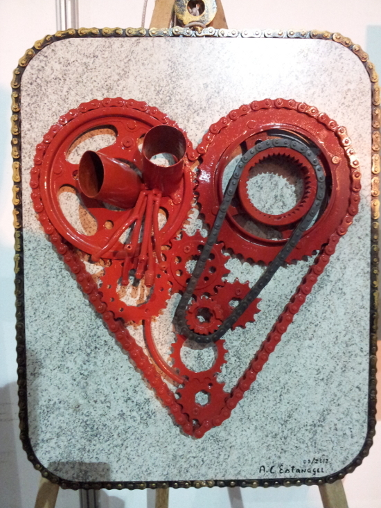

Entre os dias 14 e 23 de setembro, das 9 às 21hs, no Parque Vila Guilherme – Trote em São Paulo Capital aconteceu o XVI Revelando São Paulo - Festival da Cultura Paulista Tradicional (http://revelandosaopaulo.org.br/rv/)
Pela curiosidade e admiração pela temática, estive presente e entre tanta coisas acabei me deparando com o trabalho do artesão Antonio Carlos Estanagel, da cidade de Itapetininga, interior do estado.
Estanagel faz peças de arte a partir do que alguns chamam de sucata. Ele visita lixões, ferro-velhos e desmanches de carros para pegar matéria-prima para seu trabalho. De enorme criatividade, as peças feitas são bastante impressionantes do ponto de vista da criatividade e recriação. Com uma produção artesanal, gambiarrística e pequena ele sobrevive de seu trabalho, através da venda de algumas peças e pensa em ministrar cursos abertos para ensinar algumas técnicas de criação a outros entusiastas da ArtedoLixo. Abaixo algumas fotos tiradas durante o evento.
leia mais >>